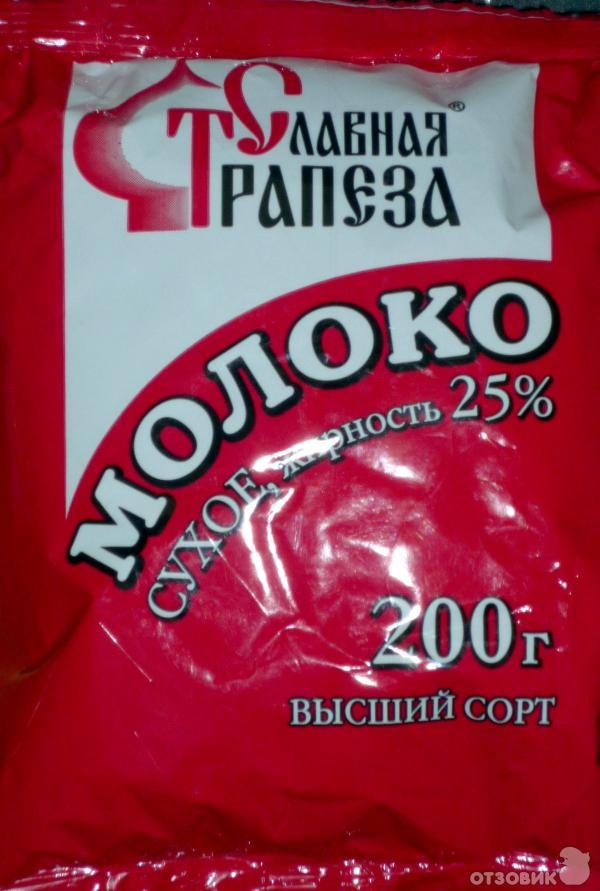

Проект похода
Table of Contents
- 1. Распределение общественного снаряжения
- 2. Распределение продуктов по рюкзакам
- 3. Тем, кто несет бензин!
- 4. Рекомендации по продуктам (где купить/что купить/как упаковать)
- 5. TODO Рекомендации по докупке общественного снаряжения
- 6. Маршрут и график движения
- 7. Пример списка личных вещей (список руководителя)
- 8. Уголок руководителя
1 Распределение общественного снаряжения
Дата создания: 2019-09-25 00:15:10.904555
Участник: Авраменко, несет: 4150.0
name weight Кто несет
0 Палатка 6ч 4150.0 Авраменко
Участник: Бубнова, несет: 800.0
name weight Кто несет
15 ремнабор+мочалка 800.0 Бубнова
Участник: Виноградова, несет: 1000.0
name weight Кто несет
23 Фотонабор 1000.0 Виноградова
Участник: Герасимов, несет: 3280.0
name weight Кто несет
1 Стойки 6ч 1900.0 Герасимов
2 Полиэтилен 6ч 340.0 Герасимов
7 Кастрюля 6л 580.0 Герасимов
11 Экран 260.0 Герасимов
28 Веревка(шнурок) (D=4мм) 20м 200.0 Герасимов
Участник: Дятлов, несет: 4070.0
name weight Кто несет
8 Примус 1070.0 Дятлов
24 Видеонабор 200.0 Дятлов
26 Веревка D9 50м 2800.0 Дятлов
Участник: Еналеев, несет: 3360.0
name weight Кто несет
4 Полиэтилен 3 340.0 Еналеев
5 Лопата Фискарс 490.0 Еналеев
9 Примус запасной 1070.0 Еналеев
10 Сухой спирт 200.0 Еналеев
22 Аптека малая 360.0 Еналеев
25 Дрон 900.0 Еналеев
Участник: Лебедев, несет: 3195.0
name weight Кто несет
6 Клава 7л 1500.0 Лебедев
12 мочалка 20.0 Лебедев
13 рукавица дежурного 30.0 Лебедев
14 половник 50.0 Лебедев
16 карты+документы 255.0 Лебедев
17 весы 70.0 Лебедев
18 Компас 50.0 Лебедев
19 GPS + 2 батарейки 170.0 Лебедев
20 2 батарейки для GPS 50.0 Лебедев
27 Кошки 1000.0 Лебедев
Участник: Малышев, несет: 3480.0
name weight Кто несет
3 Палатка+стойки 3ч 3480.0 Малышев
Участник: Ткачева, несет: 1120.0
name weight Кто несет
21 Аптека 1120.0 Ткачева
Сводная таблица name weight Кто несет
0 Палатка 6ч 4150.0 Авраменко
1 Стойки 6ч 1900.0 Герасимов
2 Полиэтилен 6ч 340.0 Герасимов
3 Палатка+стойки 3ч 3480.0 Малышев
4 Полиэтилен 3 340.0 Еналеев
5 Лопата Фискарс 490.0 Еналеев
6 Клава 7л 1500.0 Лебедев
7 Кастрюля 6л 580.0 Герасимов
8 Примус 1070.0 Дятлов
9 Примус запасной 1070.0 Еналеев
10 Сухой спирт 200.0 Еналеев
11 Экран 260.0 Герасимов
12 мочалка 20.0 Лебедев
13 рукавица дежурного 30.0 Лебедев
14 половник 50.0 Лебедев
15 ремнабор+мочалка 800.0 Бубнова
16 карты+документы 255.0 Лебедев
17 весы 70.0 Лебедев
18 Компас 50.0 Лебедев
19 GPS + 2 батарейки 170.0 Лебедев
20 2 батарейки для GPS 50.0 Лебедев
21 Аптека 1120.0 Ткачева
22 Аптека малая 360.0 Еналеев
23 Фотонабор 1000.0 Виноградова
24 Видеонабор 200.0 Дятлов
25 Дрон 900.0 Еналеев
26 Веревка D9 50м 2800.0 Дятлов
27 Кошки 1000.0 Лебедев
28 Веревка(шнурок) (D=4мм) 20м 200.0 Герасимов
2 Распределение продуктов по рюкзакам
2.1 Пояснение к таблице
Каждый участник находит себя в таблице, покупает и фасует те продукты, которые положено ему купить. В поле portion указан вес порции на всю команду, в поле times указано число потреблений продукта, а в поле weight указан общий вес покупаемого продукта.
2.2 Таблица
Дата создания: 2019-09-24 23:06:12.574324 Участник: Авраменко, несет: 5418.0 name portion times weight Кто несет 11 Сухое молоко (завтрак) 225.0 6.0 1350.0 Авраменко 16 Cухое молоко в кофе (завтрак) 18.0 6.0 108.0 Авраменко 18 Колбаса (перекус) 360.0 3.0 1080.0 Авраменко 19 Сыр (перекус) 360.0 3.0 1080.0 Авраменко 21 Орехи (перекус) 180.0 6.0 1080.0 Авраменко 24 Сухари (перекус) 360.0 2.0 720.0 Авраменко Участник: Бубнова, несет: 2160.0 name portion times weight Кто несет 35 Сладости (ужин) 360.0 6.0 2160.0 Бубнова Участник: Виноградова, несет: 2070.0 name portion times weight Кто несет 20 Шоколад (перекус) 225.0 6.0 1350.0 Виноградова 22 Сухари (перекус) 360.0 2.0 720.0 Виноградова Участник: Герасимов, несет: 5436.0 name portion times weight Кто несет 8 Геркулес Традиционный (завтрак) 360.0 2.0 720.0 Герасимов 9 Рис (завтрак) 450.0 2.0 900.0 Герасимов 10 Гречка (завтрак) 450.0 2.0 900.0 Герасимов 12 Колбаса (завтрак) 360.0 3.0 1080.0 Герасимов 13 Сыр (завтрак) 360.0 3.0 1080.0 Герасимов 27 Чеснок 36.0 6.0 216.0 Герасимов 34 Лук 90.0 6.0 540.0 Герасимов Участник: Дятлов, несет: 5418.0 name portion times weight Кто несет 0 Соль 63.0 6.0 378.0 Дятлов 2 Сахар 540.0 2.8 1512.0 Дятлов 4 Лимоны в сахаре 180.0 6.0 1080.0 Дятлов 5 Перец 9.0 6.0 54.0 Дятлов 6 Хмели-сунели 9.0 6.0 54.0 Дятлов 38 Бензин 900.0 2.6 2340.0 Дятлов Участник: Еналеев, несет: 5598.0 name portion times weight Кто несет 1 Сахар 540.0 3.2 1728.0 Еналеев 36 Спирт (ужин) 135.0 6.0 810.0 Еналеев 37 Бензин 900.0 3.4 3060.0 Еналеев Участник: Лебедев, несет: 6264.0 name portion times weight Кто несет 28 Супы 315.0 6.0 1890.0 Лебедев 33 Пеммикан (ужин) 729.0 6.0 4374.0 Лебедев Участник: Малышев, несет: 5490.0 name portion times weight Кто несет 14 Изюм (завтрак) 45.0 6.0 270.0 Малышев 23 Сухари (перекус) 360.0 2.0 720.0 Малышев 29 Рис (ужин) 720.0 1.0 720.0 Малышев 30 Гречка (ужин) 720.0 2.0 1440.0 Малышев 31 Чечевица (ужин) 720.0 1.0 720.0 Малышев 32 Спагетти (ужин) 810.0 2.0 1620.0 Малышев Участник: Ткачева, несет: 2268.0 name portion times weight Кто несет 3 Чай (зеленый / черный) 63.0 6.0 378.0 Ткачева 7 Аджика 27.0 6.0 162.0 Ткачева 15 Чернослив (завтрак) 180.0 3.0 540.0 Ткачева 17 Кофе 18.0 6.0 108.0 Ткачева 25 Курага (перекус) 90.0 6.0 540.0 Ткачева 26 Чернослив (перекус) 90.0 6.0 540.0 Ткачева Сводная таблица name portion times weight Кто несет 0 Соль 63.0 6.0 378.0 Дятлов 1 Сахар 540.0 3.2 1728.0 Еналеев 2 Сахар 540.0 2.8 1512.0 Дятлов 3 Чай (зеленый / черный) 63.0 6.0 378.0 Ткачева 4 Лимоны в сахаре 180.0 6.0 1080.0 Дятлов 5 Перец 9.0 6.0 54.0 Дятлов 6 Хмели-сунели 9.0 6.0 54.0 Дятлов 7 Аджика 27.0 6.0 162.0 Ткачева 8 Геркулес Традиционный (завтрак) 360.0 2.0 720.0 Герасимов 9 Рис (завтрак) 450.0 2.0 900.0 Герасимов 10 Гречка (завтрак) 450.0 2.0 900.0 Герасимов 11 Сухое молоко (завтрак) 225.0 6.0 1350.0 Авраменко 12 Колбаса (завтрак) 360.0 3.0 1080.0 Герасимов 13 Сыр (завтрак) 360.0 3.0 1080.0 Герасимов 14 Изюм (завтрак) 45.0 6.0 270.0 Малышев 15 Чернослив (завтрак) 180.0 3.0 540.0 Ткачева 16 Cухое молоко в кофе (завтрак) 18.0 6.0 108.0 Авраменко 17 Кофе 18.0 6.0 108.0 Ткачева 18 Колбаса (перекус) 360.0 3.0 1080.0 Авраменко 19 Сыр (перекус) 360.0 3.0 1080.0 Авраменко 20 Шоколад (перекус) 225.0 6.0 1350.0 Виноградова 21 Орехи (перекус) 180.0 6.0 1080.0 Авраменко 22 Сухари (перекус) 360.0 2.0 720.0 Виноградова 23 Сухари (перекус) 360.0 2.0 720.0 Малышев 24 Сухари (перекус) 360.0 2.0 720.0 Авраменко 25 Курага (перекус) 90.0 6.0 540.0 Ткачева 26 Чернослив (перекус) 90.0 6.0 540.0 Ткачева 27 Чеснок 36.0 6.0 216.0 Герасимов 28 Супы 315.0 6.0 1890.0 Лебедев 29 Рис (ужин) 720.0 1.0 720.0 Малышев 30 Гречка (ужин) 720.0 2.0 1440.0 Малышев 31 Чечевица (ужин) 720.0 1.0 720.0 Малышев 32 Спагетти (ужин) 810.0 2.0 1620.0 Малышев 33 Пеммикан (ужин) 729.0 6.0 4374.0 Лебедев 34 Лук 90.0 6.0 540.0 Герасимов 35 Сладости (ужин) 360.0 6.0 2160.0 Бубнова 36 Спирт (ужин) 135.0 6.0 810.0 Еналеев 37 Бензин 900.0 3.4 3060.0 Еналеев 38 Бензин 900.0 2.6 2340.0 Дятлов
3 Тем, кто несет бензин!
Первым делом надо пересчитать вес бензина в объем. В одной 1.5 литровой бутылке умещается 1150г бензина. Таким образом:
- Еналеев несет: 4л бензина
- Дятлов несет: 3л бензина
Все бутылки должны быть с правильными крышками. Бутылки должны быть вымыты и тщательно высушены. Сохнут они долго, поэтому начинать надо уже сейчас. Бутылки не сминать, а просто завинтить и уложить в рюкзак. В смятых бутылках потом образуются трещины, и бензин потечет. Бутылки должны быть из плотного пластика, идеал - вода «Новотерская». К сожалению, она продается с неправильными крышками.
Крышки должны быть «правильными». Правильная крышка не имеет прокладки, но имеет в донышке выступающее кольцо (ребро), которое при завинчивании прижимает бутылку к стенке крышки. Такие крышки особенно хороши для бензина. Их можно найти на газонах и пустырях (такие крышки помыть). В последнее время их стали производить узкими (низкими). Желательно найти найти крышки сторого образца, более высокие. В Пивариусе разливное пиво закрывают правильными крышками. Однажды я попросил несколько штук, и продавцы поделились. Бывает, что правильные крышки приходится искать на газонах.

Figure 1: Правильная крышка
3.1 Упаковка сухого спирта
Сухой спирт гигроскопичен! Но есть простое решение, как избежать этой напасти. Достаточно расколоть таблетки сухого спирта пополам и затолкнуть в небольшую бутылку. Если нет "небольшой бутылки" - обращайтесь.
4 Рекомендации по продуктам (где купить/что купить/как упаковать)
4.1 Все финансовые расходы записывайте!
Потом всё усредним и рассчитаемся. ТЕМ, КТО ПОКУПАЕТ СЫР И КОЛБАСУ: чтобы лишний раз не бегать в магазин, очень желательно прийти со своими весами и взвесить лично покупаемый продукт. Важно, чтобы общий вес был равен тому, что написано у вас в таблице в колонке "weight".
4.2 Расфасофка круп
Крупы фасуют по разам (см. в таблице колонку "portion"). Крупа засыпается в полиэтиленовый пакет, который обматывается скотчем, затем на бумажке пишут примерно так: "Геркулес, завтрак 360г", или "Рис, ужин 720г". Обратите внимание, что вес крупы на завтрак меньше, чем вес крупы на ужин. Их путать не надо!!! Дальше мотают скотч поверх бумажки, таким образом получаем плотный кулек с бумажкой под скотчем.
4.3 Сахар и соль
4.3.1 Фасуется по бутылкам
Плотность утрамбованного сахара равна плотности воды.
4.4 Лимоны в сахаре
Берётся сахар и лимоны в пропорции 1 к 1 (для готового продукта 1080гр нужно 540гр лимнов и 540гр сахара). Лимоны нарезаются на "кружочки", затем каждый "кружочек" на "четвертинки", после чего их нужно смешать с сахаром в отдельной посуде. Подождать, пока лимоны пустят сок, а сахар растает. Получившуюся массу залить в подходящую бутылку, желательно с широким горлышком (чтобы было удобно как заполнять бутылку, так и доставать из неё лимоны в походе).
4.5 Геркулес
Традиционный геркулес марки "Русский продукт". Смотри расфасофку круп.
4.6 Рис
Рис круглозерный с мутными зернами, но без надписи "Кубань" на упаковке. Смотри расфасофку круп.
4.7 Любую гречку дороже 50руб с разумным ценником
Например "Мистраль", "Увелка", "Националь" подойдут. Смотри расфасофку круп.
4.8 Чечевица
Чечевица без надписи "Для супов" на упаковке. Жалательно крупную, не рассыпчатую. Лучше всего подойдёт зеленая. Подойдут "Мистраль", "Вкусвилл" и т.п. ("Каждый день" лучше не брать). Смотри расфасофку круп.
4.9 Спагетти
Спагетти N3, Barilla или Federici. Паковать так же, как и крупы. Смотри расфасофку круп.
4.10 Сухое молоко
Сухое молоко надо брать марки "Славянская трапеза" в расфасовке 200г. На один завтрак по раскладке нужно 225г, а уменьшение порции молока с 225 до 200г приведет к уменьшению порции на участника с 25 до 22г. Это не критично, посколько раскладка будет 637-ми грамовая. Таким образом одна 200г пачка уходит за один завтрак. Пачку сухого молока надо замотать скотчем. Молоко можно купить тут. Если вместо 200грамовых пачек будут 400грамовые, то возьмите их в два раза меньше.

Figure 2: Сухое молоко Славянская трапеза
4.10.1 Сухое молоко в кофе
См. пункт "Сухое молоко". Отличается только фасофка. Надо засыпать в подходящего размера бутылку. Если ничего подходящего не находится - пишите.
4.11 Колбаса
В Ремите продается отличная колбаса. Называется "Миланская". Купить её можно в Ремите на Войковской.
4.12 Сыр на завтрак
"Императорский" сыр (обычно продаётся в круглой упаковке). Возможно есть там же, где и сыр на перекус. Целиком упаковка весит 2кг, поэтому нужно попросить отрезать половину (а точнее 1080гр). Если сыра нет в этом магазине, можно попробовать купить в ближайшем (тут, вход под вывеской "Французская пекаря" - с правой стороны есть сыр). На разовые порции сыр резать не нужно - берите в поход целым куском! Хранить сыр нужно не в пакете, а в ткани (подойдёт любая чистая).
4.13 Сыр на перекус
Есть вкусный твердый сыр из Алтая. Называется "Джугас". Купить его можно тут. Нужно попросить продавца отрезать сразу 1080гр. На разовые порции сыр резать не нужно - берите в поход целым куском! Хранить сыр нужно не в пакете, а в ткани (подойдёт любая).
4.14 Изюм
Можно купить там же, где и сыр на перекус. Хорошо если получится купить смесь из разного винограда (темного / светлого). После покупки изюм нужно тщательно промыть, высушить и сложить в бутылку подходящего размера.
4.15 Шоколад
Насте В. уже даны подробные поручения. Частично продублирую: покупаем молочный и горький шоколад. Часть шоколада можно сделать из Lindt, Heidi, Schogetten и т.п. Настя В. хочет попробовать купить в поход Rioba.
4.16 Орехи
Орехи можно попробовать купить тут. Если в группе есть аллергики на орехи, то на их долю нельзя покупать грецкие (но лучше уточнять лично). Нейтральными являются кешью, кедровые и фисташки. Если нет аллергии, то можно еще миндаль, грецкие, фундук и бразильский орех. Порции орехов разделить по разам (т.е. если есть несколько видов орехов, их нужно смешать вместе в объеме равном "portion" в таблице), сложить в обычный целлофановый пакет и замотать скотчем.
4.17 Сухари
Сушим черный «дарницкий» хлеб. Никаких специфических сортов, типа бородинского, не надо. Сечение буханки делится на 4 части. Каждая такая четвертинка после высушивания весит около 10 грамм. В литровый пакет (тетрапак) из под молока при плотной упаковке помещается около 360 грамм сухарей (36 четвертинок). Заполненный сухарями тетрапак обмотать скотчем.
Купить такой хлеб можно в Магнолии (Волоколамское ш., 15/22).
Подойдёт дарницкий "Дедовский" нарезной ("дарницкие" разные бывают - этот не крошится в руках и прекрасен для сухарей). Может быть и любой другой, главное, чтобы он не крошился в руках и держал форму.
Духовка. 140 градусов. На противне, без масла. 25 минут с каждой стороны (всего 50 минут).
Если не будет хватать тетрапаков - обращайтесь.

4.18 Сладости
Покупаем всегда тут. Нужно купить: "Узбекскую халву", "Кос. халву", "Фисташковую халву" - лучше всего всех по 2 шт. Можно сразу попросить поделить по 360гр (1 порция). Если чего-то не будет, то желательно позвонить завхозу. Так же "кос. халва" продаётся там же, где и сыр на перекус. Каждую порцию сладкого по 360гр положить в пакет и замотать её скотчем.
4.19 Магазины
4.19.1 улица Зои и Александра Космодемьянских, 4к1 (вход справа от "Пятерочки")
Можно купить:
4.19.2 Ленинградский проспект, 73Ас3 ("Продукты")

Можно купить:
5 TODO Рекомендации по докупке общественного снаряжения
5.1 TODO Полиэтилен в палатки
5.2 TODO Хозяйственная веревочка
6 Маршрут и график движения
6.1 Нитка в kml формате для Google Earth
6.3 График движения
| День | N | Наименование участка пути | Перепады высоты | Высота ночёвки | Н [m] | Lz [km] | Lf [km] | L эфф. |
|---|---|---|---|---|---|---|---|---|
| 4.10 | - | Отправление поезда № 034 в 21.50 | - | - | - | - | - | - |
| 5.10 | - | В поезде | - | - | - | - | - | - |
| 6.10 | 1 | Прибытие поезда в Армавир в 01.19, переезд на арендном автотранспорте к КПП в устье Б.Дукки + переход в вост. цирк пер. Ацгара | 1775-2625 | 2625 | 850 | 10.76 | 10.76 | 19.26 |
| 7.10 | 2 | п.т. - пер. Чилик (2915, 1А) - оз. Чилик - пер. Кынхара (2870, 1А) - оз. Голубое | 2625-2915-2405-2870-2680 | 2680 | 755 | 6.92 | 6.92 | 14.47 |
| 8.10 | 3 | п.т. - р. Кяфар - пер. Мылгвал (2825, 1А) - безымянное озеро | 2680-2185-2825-2790 | 2790 | 640 | 8.96 | 8.96 | 15.36 |
| 9.10 | 4 | Безымянное озеро - пер. Агур (2977, 1А) – траверс пика Динника (3177,1А) – Архызский кругозор – пос. Архыз | 2790-3170-3085-3177-1465 | 1465 | 472 | 12.3 | 12.3 | 17.02 |
| 10.10 | 5 | п.т. - пер. Малый Кяфарский (2750,1А) – оз. 2600 | 1465-2750-2600 | 2600 | 1285 | 7.43 | 7.43 | 20.28 |
| 11.10 | 6 | п.т. - траверс хр. Абишира-Ахуба до пер. Генеровская балка – р. Зеленчук. | 2600-2810-2290-2345-1225 | 1225 | 265 | 17.23 | 17.23 | 19.88 |
| 12.10 | 7 | Переезд в Невинномыск, отправление с поездом № 121С в 12.49 | - | 0 | 0 | 0 | 0 | |
| 13.10 | - | Прибытие поезда в Москву в 20.44 | - | - | 0 | 0 | 0 | 0 |
| ВСЕГО: | 4267 | 63.6 | 63.6 | 106.27 |
7 Пример списка личных вещей (список руководителя)
[ ]Спальник[ ]Чехол от спальника[ ]Рюкзак[ ]Ледоруб[ ]Коврик толстый[ ]Коврик тонкий[ ]Обувь[ ]Ботинки горные (поеду в ботинках)[ ]Гамаши[ ]Кроссовки[ ]Тапочки
[ ]Ходовое белье[ ]Штаны капроновые ходовые 1[ ]Штаны капроновые ходовые 2[ ]Анарака[ ]Панамка[ ]Носки ходовые 2 пары
[ ]теплое белье[ ]термобелье кофта[ ]термобелье штаны[ ]Штаны поларовые[ ]Поларовая серая кофта, с капюшоном (теплая)[ ]Красная пуховка[ ]Перчатки поларовые[ ]руковицы с вкладышем[ ]Шапка[ ]Шарфик[ ]Носки спальные
[ ]Накидка от дождя и чехол[ ]Гермопакет[ ]нижнее белье[ ]Трусы 2[ ]Синяя футболка с длинными рукавами[ ]Синяя футболка
[ ]КЛМН[ ]Кружка[ ]Ложка[ ]Миска[ ]Нож
[ ]Фляга[ ]Портмане[ ]Паспорт РФ[ ]проездной документ[ ]карта сбербанка[ ]наличные деньги
[ ]Билеты[ ]Связь[ ]сотовый телефон[ ]зарядка
- Фототехника
[ ]Фотоаппарат[ ]Запасной аккумулятор[ ]Мини-штатив
[ ]Досуг[ ]e-book[ ]USB зарядка[ ]micro USB шнур[ ]Монокль[ ]Блокнот и ручка
[ ]Освещение[ ]Фонарь[ ]Комплект батареек для фонаря
[ ]Всякие другие вещи[ ]Очки солнцезащитные[ ]пластырь[ ]крем от солнца[ ]Зажигалка[ ]зубная паста[ ]зубная щетка[ ]антисептик[ ]туалетная бумага[ ]маленькие пакеты
8 Уголок руководителя
8.1 Чек лист
8.1.1 Перед выходом из дома
[ ]спальник[ ]ботинки[ ]мясо из холодильника[ ]паспорт, деньги, билеты, телефон[ ]карты и маршрутная книжка[ ]пустая красная канистра
8.1.2 Перед выходом в горы
[ ]купить бутылку с водой (будет фляга)[ ]позвонить в МКК и в МЧС[ ]у каждого участника должна быть зажикалка!